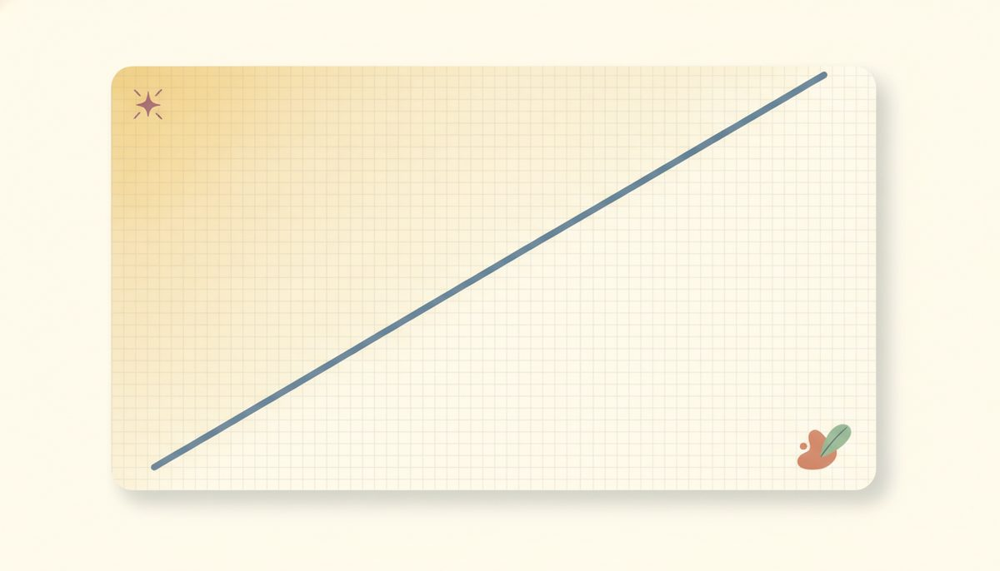

Graphing linear inequalities (two variables) & systems

In Unit 5, the answer to a two-variable equation like y = 2x + 1 was a line, every point on it. Loosen the = to an inequality and the answer grows: instead of the line, you get a whole region, a flat sheet of points filling one side of that line. This is the picture behind questions like "which combinations of two things are allowed," where a budget or a limit carves the plane into the allowed part and the rest.
Think about y > 2x + 1. It's asking, for each point, "is the output bigger than what the line gives?" Put another way, "which points sit above the line y = 2x + 1?" The line itself is the dividing fence: above it the inequality is true, below it false. So the answer isn't the fence, it's the whole field on one side of it. That field is called a half-plane, and the line is its boundary 8.4.f1.
Once the boundary is drawn, two decisions turn it into a finished graph:
- Dashed or solid? This is the same open-versus-filled choice from Lesson 8.1 in a new costume. If the inequality is strict (< or >), the boundary itself isn't included, so you draw it dashed. If it's inclusive (≤ or ≥), the boundary counts, so you draw it solid.
- Which side to shade? Here there's a reliable method that never makes you guess: test a point that isn't on the line, drop it into the inequality, and see if it makes a true statement. If it does, shade the side that point is on; if it doesn't, shade the other side.
The easiest test point is almost always the origin, (0,0), because the arithmetic is trivial, unless the line runs through the origin, in which case you pick any other off-line point. And say the test out loud as you do it, because hearing it keeps you honest: "at (0,0), is 0 > 1? No, so shade the other side."
So you graph the boundary, mark it dashed or solid, and let a tested point pick the side. Compute the two boundary points rather than eyeballing them; a small sign slip there throws off the whole line.
For a system, meaning two or more inequalities that must all hold at once, you graph each region the same way, then keep only where they overlap. The overlap is the set of points that satisfy every inequality together, and you confirm it by testing a point that should be inside all of them.
New words
- 8.4.d1 Linear inequality in two variables: e.g. y > 2x + 1, satisfied not by a line but by a half-plane (every point on one side of the boundary).
- 8.4.d2 Boundary line: the line you get by replacing the inequality with = (here y = 2x + 1, the function f(x) = 2x+1). Dashed if strict (<, >), meaning the line itself is not included; solid if inclusive (≤, ≥).
- 8.4.d3 Half-plane / test point: one of the two sides the boundary cuts the plane into. To choose the correct side, test a point not on the line (the origin (0,0) is easiest) and shade the side that makes the inequality true.
- 8.4.d4 System of inequalities: two or more inequalities at once; the solution is the overlap of their shaded regions.
Worked example
8.4.w1 Example 1, strict, dashed. Graph y > 2x + 1. Boundary: y = 2x + 1, through (0,1) and (1,3). It's strict (>), so draw it dashed: the line itself isn't part of the answer. Test (0,0): is 0 > 2(0) + 1 = 1? That's 0 > 1, which is false, so shade the side not containing the origin. Region: everything above the dashed line.
8.4.w2 Example 2, inclusive, solid. Graph y ≤ -x + 3. Boundary: y = -x + 3, through (0,3) and (3,0). It's inclusive (≤), so draw it solid: the line is included. Test (0,0): is 0 ≤ -0 + 3 = 3? That's 0 ≤ 3, which is true, so shade the side containing the origin. Region: the line and everything below it.
8.4.w3 Example 3, fractional slope, dashed. Graph y < (1/2)x - 2. Boundary: y = (1/2)x - 2, through (0,-2) and (2,-1). Strict (<), so dashed. Test (0,0): is 0 < (1/2)(0) - 2 = -2? That's 0 < -2, which is false, so shade the other side. Region: below the dashed line.
8.4.w4 Example 4, a system. Graph the system y ≥ x - 1 and y ≤ -x + 3. Take them one at a time. Boundary 1: y = x - 1, solid (inclusive); test (0,0): is 0 ≥ -1? True, so shade the side with the origin. Boundary 2: y = -x + 3, solid; test (0,0): is 0 ≤ 3? True, so shade the side with the origin again. The solution is the overlap of the two shaded regions, a wedge that contains the origin, fenced by both solid lines. Confirm it with a point inside the overlap, say (1,0): 0 ≥ 1 − 1 = 0 is true, and 0 ≤ -1 + 3 = 2 is true, so (1,0) belongs to both.
A couple of things to keep straight, now that you've worked the clean cases. Don't try to guess the side from the direction of the sign: once the line tilts, a > does not always mean "shade up," so let the tested point decide every time.
And if the boundary runs through the origin, the origin sits on the fence and can't tell you a side, so pick a different test point, like (1,0). For a system, the answer is the overlap, never the union: shading each region is only the setup, and the solution is just the part they share.
Check yourself
- 8.4.c1 For y < x + 4: is the boundary dashed or solid, and how do you decide which side to shade? Do the origin test out loud. (Strict <, so dashed. Test (0,0): is 0 < 0 + 4 = 4? Yes, true, so shade the side with the origin, below the line.)
- 8.4.c2 Your boundary line passes through (0,0). Why can't you use the origin as your test point, and what would you use instead? (Because (0,0) is on the boundary, it can't tell you which side is the solution. It's on the fence, not on either side. Pick any point not on the line, such as (1,0), and test that.)
- 8.4.c3 A system is y > x and y < 4. Describe the solution region: which two boundaries, dashed or solid, and roughly where the overlap sits. (Both boundaries are dashed: the line y = x and the horizontal line y = 4. The overlap is the region above y = x and below y = 4, a wedge opening to the left, where points satisfy both at once.)
For each problem, name the boundary line, say dashed or solid, run the test point out loud, and then state which side to shade. The answers are at the end of the lesson, with a worked example to match each problem.
(for each: name the boundary line, dashed or solid, the test point with its true/false result, and which side to shade)
Set A, single inequalities
Reveal answerHide to problem 1
Boundary y = x + 2 (e.g. (0,2),(1,3)), dashed. Test (0,0): 0 > 2? false → shade the side without the origin (above the line).Reveal answerHide to problem 2
Boundary y = 2x - 1 ((0,-1),(1,1)), solid. Test (0,0): 0 ≤ -1? false → shade the other side (below the line).Reveal answerHide to problem 3
Boundary y = -x + 4 ((0,4),(4,0)), dashed. Test (0,0): 0 < 4? true → shade the side with the origin (below/left).Reveal answerHide to problem 4
Boundary y = 3x ((0,0),(1,3)), solid. Origin is on the line — test (1,0): 0 ≥ 3(1)=3? false → shade the side not containing (1,0): the side holding points like (0,1) and (-1,0) — above/left of the steep line. (For a steep line, pick the shaded side by testing a point you can see is in or out, not by "left" or "right".)Reveal answerHide to problem 5
Boundary x + y = 5 ((0,5),(5,0)), dashed. Test (0,0): 0 + 0 = 0 < 5? true → shade the side with the origin (below/left).Set B, a system
Reveal answerHide to problem 6
Boundary 1 y = x, dashed, shade above (test (0,1): 1 > 0). Boundary 2 y = -x + 4, dashed, shade below (test (0,0): 0 < 4). Solution = the overlap, a wedge between the two dashed lines (e.g. (1,2): 2 > 1 and 2 < 3).Set C, boundary arithmetic (eval)
Reveal answerHide to problem 7
y = 2(2) - 3 = 1 → plot (2, 1).You can now solve a one-variable inequality the same way you solve an equation, flipping the sign only when you multiply or divide by a negative, and confirm it by testing a point in the original.
You can graph a solution with the right circle and direction, chain conditions with and (the overlap) and or (the union), read absolute value as distance from 0 to handle |x| = k, |x| < k, and |x| > k, and graph a two-variable inequality or a system as a shaded region picked out by a test point.
One habit runs through all of it: solve the way you always have, then test a point in the original to confirm the answer.